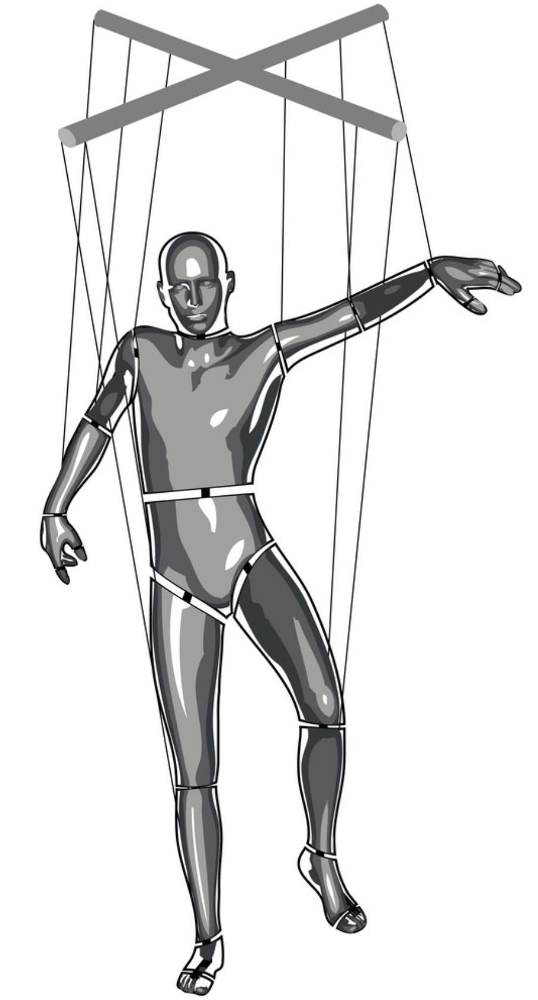
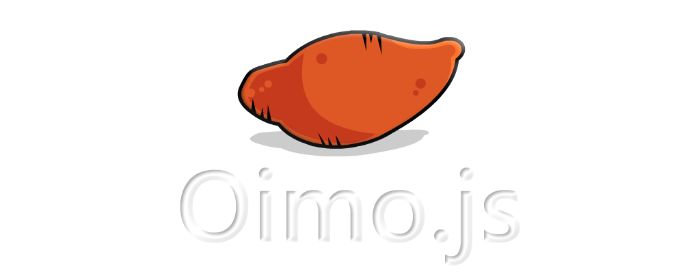
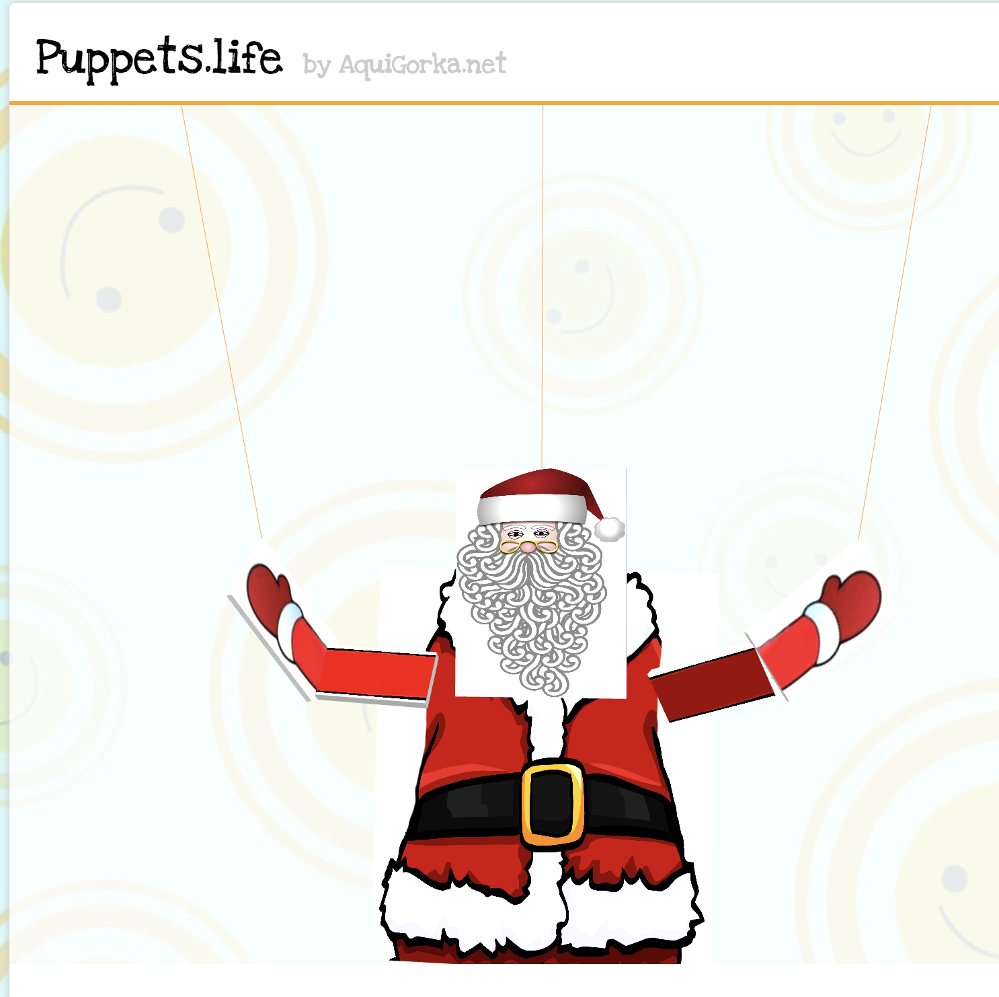
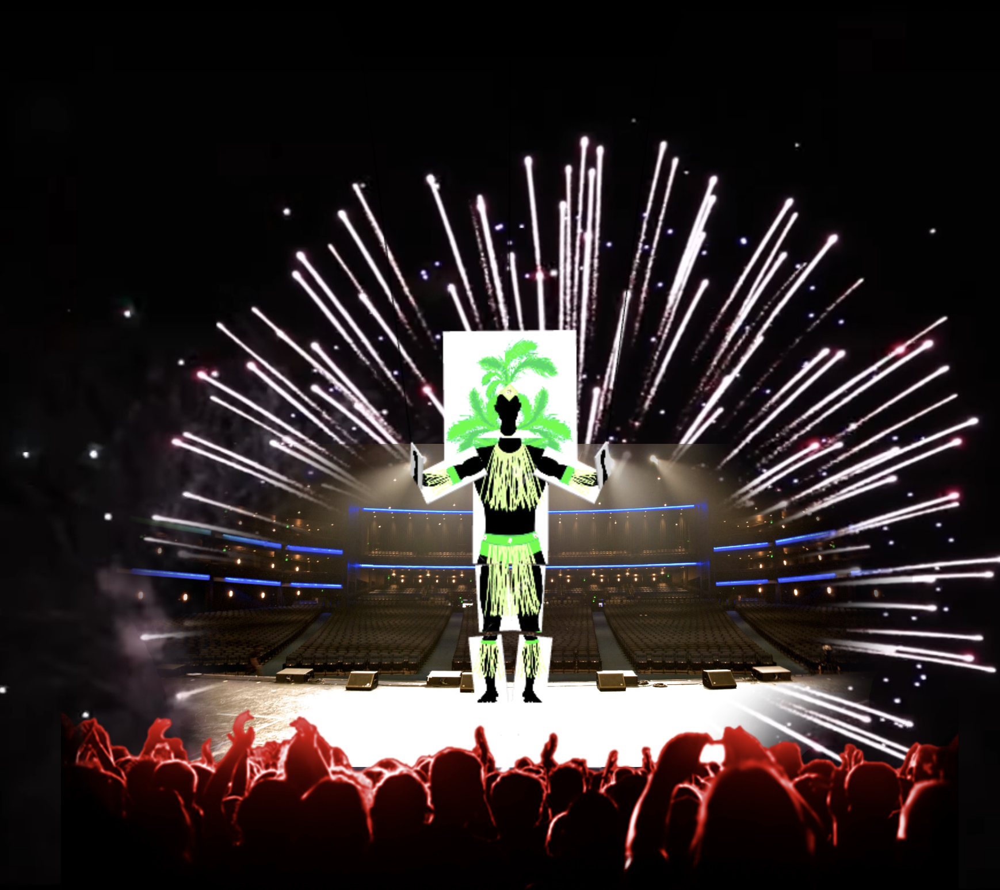
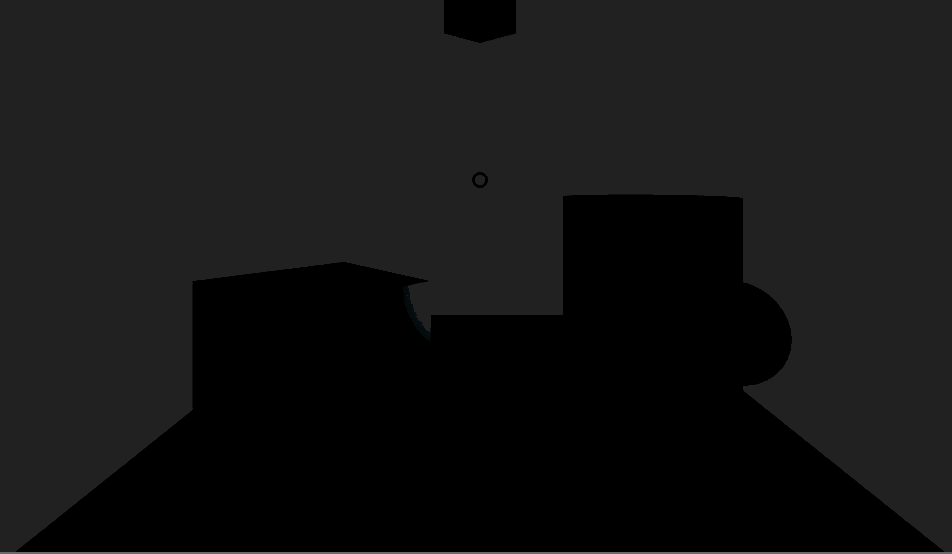
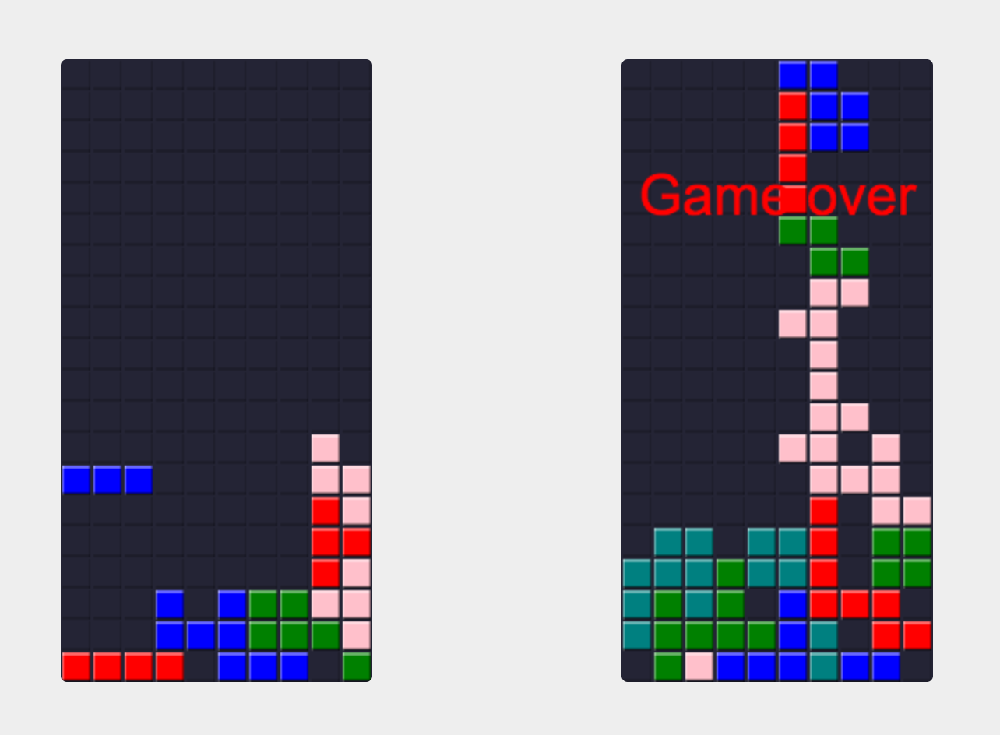
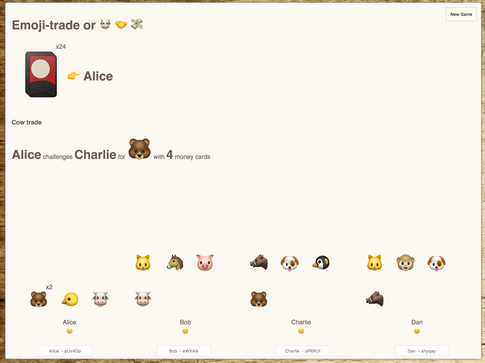

## 3D virtual Puppet remote-controlled with smartphone Note: - Buenas tardes, mi nombre es Gorka y hoy les voy a hablar del proceso... - Veamos la agenda
## Agenda - Inception - WebRTC - WebGL - Physics engine - Gyroscope - More ideas - Q&A Note: - Voy a empezar por contar la historia, de dónde salió la idea y lo que logré - Y luego específicos de cada una de las partes - Empecemos por el ciertas consideraciones
## El origen Note: - Sin servers - Server: Auth, BD, mantener el server - Web - Web: Browsers y de ser posible sin descargar apps - El camino - 2010 -> 2018 - Era el año 2010...
### ~2010 - Gypsy - software que viviera sólo en memoria en el browser (en ejecución en JS) - Flash sockets Note: - sabia que podía abrir sockets pero necesitaría un server con C o Java - Un par de años después la tech realt-time había mejorado mucho...
### ~2012 WebSockets + socket.io! backenders: > "conexiones son caras" yo: > "¿por qué no sacamos el server?" Note: - sacar el server y hacer algo como torrents, ahí encontré WebRTC! - y ahí, kapow, encontré un científico loco
### ~2014 Mathias Buus (@mafintosh): - Youtube: Javascript... Torrents... and Mad Science! Note: - torrent-mount y con eso crearon el proyecto webtorrent que ya usaba webrtc - Ahora ya tenía herramientas para hacer algo
### ¿Qué hacer? Algo que fuera más allá del ejemplo de usar el smartphone como volante de un auto  Note: - ya sabía lo que quería hacer, por donde empecé de manera incremental - Hice primeras pruebas...
### ~2014 Experimentos Remote smartphone | Sarcasm-o-meter :-----------------------:|:-------------: <img data-src="img/remote-smartphone.gif" height="200"> | <img data-src="img/sarcasm-o-meter.gif" height="200"> Note: - v0's con iPad, no tenía un celular con webrtc - me faltaban las cuerdas, de hecho empecé por el remote pero no supe como hacer cuerdas, por eso volví al sarcasmometro - en ese mismo año...
### ~2014 **Noviembre JSConfAR** Mr.doob Author de ThreeJS Note: - Physics engine para cuerdas? Me dio nombres pero no soluciones - Pero me encaminó a leer de physics engines en JS
### ~2015 Oimo.js  Note: - tenía constraints, que no son "cuerdas" pero funcionaban - en una feria de videojuegos uno me preguntó si usaba la cámara
### Puppets <img data-src="img/tino.gif" height="500" /> Note: 1. Una marioneta virtual en 3D en una página web 1. Una barra de control para la marioneta con "cuerdas" 1. Un motor de física que hace que se mueva la marioneta si se mueve la barra de control 1. Un smartphone con giroscopio para mover la barra de control 1. Una conexión entre el browser de la marioneta y el smartphone Veamos cada uno de estos en más detalle, empezamos por webrtc
## 1. Conectar browser marioneta con smartphone Note: - nunca use WebRTC nativo, desde el principio un par de librerías me hicieron la vida fácil
### PeerJS: 2 steps ```sh # server git clone https://github.com/peers/peerjs-server cd peerjs-server node bin/peerjs --port 9000 --key key ``` ```js // nodes (peers) // 1- "host" const peer = new Peer({ key: 'key', host: 'localhost' }) peer.on('open', id => { /* send to guest peer */ }) peer.on('connection', () => { /* connected */ }) // 2- "guest" const otherPeer = new Peer({ key: 'key', host: 'localhost' }) connection = otherPeer.connect(id) // the one from above connection.on('open', () => { /* connected */ }) ``` Note: - usa server - ahora otra librería
### Simple Peer: 3 steps ```js // 1- "host" const peer = new Peer({ initiator: true, trickle: false }) peer.on('signal', offer => /* send to guest peer */) // 2- "guest" const otherPeer = new Peer({ trickle: false }) otherPeer.on('signal', answer => /* send to host peer */) otherPeer.on('connect', () => { /* connected */ }) otherPeer.signal(offer) // 3- "host" peer.on('connect', () => { /* connected */ }) peer.signal(answer) ``` Note: - principal diferencia el server - es MUY importante, porque el server es caro - se puede atacar, hay que mantenerlo y, las conexiones son caras se acuerdan? - Ya tenemos cómo conectar clientes, ahora hay que ver como dibujar 3D
### Mecanismos de signalling para conectar WebRTC - Servers ({ peerjs, signalmaster, ...rest }) - Short links (https://github.com/AquiGorka/webrtc-connect-experiments) - Sonido (https://github.com/ggerganov/wave-share) - QR codes (https://github.com/AquiGorka/webrtc-qr) <br /> <audio controls currentTime="5"> <source data-src="./audio/dial-up.ogg" type="audio/ogg"> </audio> Note: - Ya tenemos la conexion browser con smartphone, ahora hay que dibujar 3D en web
## 2. Una marioneta virtual en 3D en una página web Note: - Una marioneta es algo sencillo, no hay nubes, humo, particulas, agua - Hay 11 elementos del cuerpo, una barra de control y cuerdas - Cómo se dibuja en browser?
### ThreeJS JavaScript 3D library ```html <!-- https://caniuse.com/#feat=canvas --> <canvas id="stage" /> ``` ```js // scene const scene = new THREE.Scene() // camera const camera new THREE.PerspectiveCamera(45, element.offsetWidth/element.offsetHeight) // renderer const renderer = new THREE.WebGLRenderer(); const element = document.querySelector('#stage') element.appendChild(renderer.domElement) ``` Note: - Esto es lo más básico - Params: fov — Camera frustum vertical field of view aspect — generalmente canvas width / canvas height - ya que tienen qué dibujar, hay que "animar"
### El loop ```js const render = () => { // before // setTimeout(render, 1000 / 60) // now requestAnimationFrame(render) // updates to elements renderer.render(scene, camera) } render() ``` Note: - cada segundo se dibujan las cosas 60 veces - ahora que ya tenemos animación faltan "relaciones" entre los objetos - pero antes, hablemos de una manera más fácil de dibujar
### A-Frame Originalmente 3D y hoy en día VR. - A-Frame is a powerful three.js framework, providing a declarative, composable, reusable entity-component structure. ```html <a-scene> <a-box position="..." rotation="..."></a-box> <a-sphere position="..." radius="..."></a-sphere> <a-plane position="..." width="..." height="..."></a-plane> <a-sky color="..."></a-sky> <a-camera fov="..."></a-camera> </a-scene> ``` Note: - sintaxis mas declarativa, mas clara y no hace falta hacer el render - ahora sí, hablemos de las relaciones entre los elementos
## 3. Un motor de física que hace que se mueva la marioneta si se mueve la barra de control Note: - Diferencia entre mesh (render, dibujo) y body (calculations, process) - Lo que se dibuja y los cálculos de donde están son dos cosas separadas - Se calcula la "situación" (posicion, rotación, tamaño, peso, velocidad, dirección) y eso se dibuja
### Oimo.js ```js const world = new OIMO.World({ gravity: [0, -9.8, 0] }) const body = world.add({ type: 'sphere', // sphere, box, cylinder move: true, // dynamic or static name: 'name-of-body', size: [1, 1, 1], pos: [0, 0, 0], rot: [0, 0, 0], }) const joint = world.add({ type:'jointHinge', // distance, hinge, prisme, slide, wheel body1: "name-of-body-1", body2: "name-of-body-2", }) ``` Note: - Con esto tenemos en los cálculos, los cuerpos y sus situaciones - Ahora hay que unirlo con los dibujos
### Render con física ```js render () => { // ... // update the world world.step() // update elements in threejs (mesh) // with data from elements in physics (body) meshes.forEach((mesh, index) => { mesh.position.copy(bodys[index].getPosition()) mesh.quaternion.copy(bodys[index].getQuaternion()) }) // ... } ``` Note: - Esta es la manera "vieja" de como se hacía, de vuelta, aframe nos hace la vida más fácil
### Cannon.js + Aframe = aframe-physics ```html <a-scene physics> <a-box id="control-bar" static-body position="0 0 0" width="1" height="1" depth="1" /> <a-box id="head" dynamic-body position="5 0 0" width="1" height="1" depth="1" constraint="target: #control-bar;" /> </a-scene> ``` Note: - no hace falta actualizar el render - y las relaciones no se definen en otro lugar - la manera que se maneja es la misma, pero la "declaración" es "integral" - ya tenía conexion de browsers, dibujos en 3D y motor de física, ahora sólo faltaba el control remoto
## 4. Datos del giroscopio del smartphone para mover la barra de control Note: - Un celular es del "tamaño" perfecto para pensar en control remoto - el giroscopio nos da los angulos de dirección y aceleración - por ahora solo tengo giros rotacionales de la barra de control - quiero trabajar en movimientos "traslacionales" - sobre los ejes - creo que aframe me lo da de gratis, al estilo VR - como obtengo los datos?
### gyro.js ```js gyro.frequency = 10 gyro.startTracking(o => { // every 10 ms // o.x, o.y, o.z for accelerometer // o.alpha, o.beta, o.gamma for gyro peer.send({ orientation: { alpha: o.alpha, beta: o.beta, gamma: o.gamma }) }) ``` Note: - webrtc tiene poco lag así que enviar los datos cada 10ms hace que la sensación de real time sea muy buena - ahora que tengo los datos, como los traduzco del otro lado
### De regreso al motor de física ```js newRotation = new THREE.Quaternion().setFromEuler( new THREE.Euler(beta * degreesToRadians, alpha * degreesToRadians, -gamma * degreesToRadians, "XYZ" )) // mesh for rendering controlBarMesh.quaternion.copy(newRotation) // body for calculations controlBarBody.setQuaternion(controlBarMesh.quaternion); ``` Note: - tomamos los angulos, los usamos para modificar el mesh primero (así es más fácil) - con el mesh ya rotado, actualizamos la barra de control en los cálculos de física (muy facil hacer el setQuaternion) - esto es antes de dibujar y actualizar en el render
### Una vez más: Tino <img data-src="img/tino.gif" height="500" /> Note: - con esto tenemos todo: 1. conexiones browsers 1. 3D en web + física + datos en real time de un celular - ¿qué pregunta sigue?, es decir, ¿y ahora qué?
## ¿Qué más se puede hacer? Note: - ya tenía un puppet, y ahora? - hice mas puppets
## Kurt y Joao Santa | Samba :----:|:---:  |  Note: - hice puppets de santa, los modelos 3D son dificiles - hice samba, pero volvía a apretar botones - algo muy interesante es que webrtc no funcionaba con ios al principio, - eso implicaba apps para descargar, y ventaja para android, pero
### Smart TVs como consolas - iOS support for WebRTC data channels! Note: - iOS con WebRTC trajo Apple TV con WebRTC - Android TV & Apple TV out of the box - Game night
### Más Experimentos Let there be Light | Multiplayer Tetris | Emoji Trade :----:|:---:|:---:  |  |  Note: - y hay más en camino: cartas, dados - leaderboards decentralizados
## Muchas gracias
### ¿Preguntas? **3D virtual Puppet remote-controlled with smartphone** - gorka@aquigorka.com - twitter.com/AquiGorka - github.com/AquiGorka/puppets